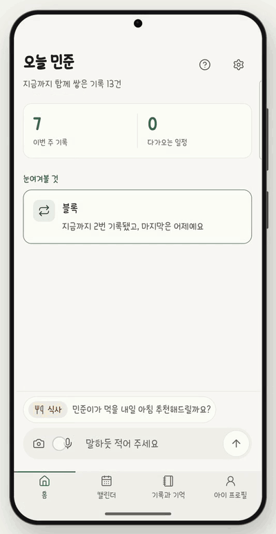

주 담당
Activity Agent · 놀이 추천
아이의 놀이 기록, 그날 날씨, 일정, 근처 장소와 행사를 함께 보고 지금 해 볼 만한 놀이를 최대 3개 추천하는 에이전트입니다.PR #162
LLM 에이전트 · 백엔드 개발
대규모 언어 모델(LLM)을 쓰는 서비스의 백엔드와 에이전트를 개발합니다. 카카오테크 캠퍼스 4기 팀 프로젝트 아이캐치에서 놀이 추천 에이전트와 AI 품질 평가를 맡았습니다. 알레르기나 월령처럼 틀리면 안 되는 판단은 코드로 처리했고, 실제 모델을 돌리는 평가로 결과를 확인했습니다.
대표 프로젝트
보호자가 남긴 한 줄을 기록으로 정리하고, 그 기록을 근거로 식사, 놀이, 일정을 추천하는 육아 서비스
 소개 영상 0:42 · GitHub README에서 재생됩니다
소개 영상 0:42 · GitHub README에서 재생됩니다
실서비스는 팀이 서버를 켜 둔 동안에만 열리고, 카카오 계정으로 로그인합니다. 닫혀 있으면 아래 데모로 보실 수 있습니다.
일하면서 아이를 키우는 보호자는 알림장, 일정, 식사, 지난 경험처럼 흩어진 정보를 매번 직접 찾아 연결하고 다음에 무엇을 할지 정해야 합니다. 육아 기록 앱은 이미 있지만 오래 쓰이지 않았습니다.
0/9
아이가 있는 보호자 9명 중 지금 기록을 남기는 사람설문
7/9
하다가 그만둔 사람. 그중 5명이 매일 입력이 번거로웠다
나 다시 볼 일이 없었다
를 골랐습니다설문
8/9
지난 한 달 사이 주말에 아이와 무엇을 할지 검색한 사람설문 제가 맡은 놀이 추천이 다루는 부분입니다
2026년 8월 · 보호자 10명 온라인 설문. 표본이 작아서 방향을 잡는 데만 썼습니다.
그래서 따로 기록하게 하기보다, 보호자가 가족에게 말하듯 남긴 한 줄을 받아 정리하기로 했습니다. AI가 그 한 줄을 식사, 건강, 놀이 기록으로 나눠 저장하고, 쌓인 기록을 근거로 저녁 메뉴나 주말 놀이, 일정을 추천합니다. 추천마다 어떤 기록을 썼는지 보여 주고, 기록이 없으면 일반 추천이라고 표시합니다. 알레르기 필터와 날짜 계산은 모델이 아니라 코드가 맡습니다.

실제 앱 · 시연 영상에서 하원길 장면만 자른 것README
보호자가 음성으로 남긴 입력
민준이가 점심을 많이 안 먹었대. 저녁엔 오일째 계란말이만 해달래. 오늘 저녁은 다른 계란 요리 추천해 줘
6명 중 AI 에이전트를 맡은 2명 중 한 명으로, 10주 동안 커밋 300개를 쓰고 PR 68개를 머지했습니다.PR 목록
주 담당
아이의 놀이 기록, 그날 날씨, 일정, 근처 장소와 행사를 함께 보고 지금 해 볼 만한 놀이를 최대 3개 추천하는 에이전트입니다.PR #162
평가
실제 모델을 돌려 서비스 규칙 위반을 코드로 판정하는 불변식 14개, 일주일 시나리오, 장애 점검표 40칸을 만들고 설계 문서(519줄 중 498줄)를 썼습니다.PR #788설계 문서
연동
기상청 단기 · 중기예보, 에어코리아 대기질, 자외선, 특보로 바깥 놀이가 가능한지 판정하고, 한국관광공사 TourAPI로 그날 열리는 행사와 문화시설을 찾습니다.PR #346#870#668
팀은 기능마다 누가 맡을지를 먼저 정했습니다. 되돌릴 수 없는 일은 사람이 승인하고, 항상 맞아야 하는 계산과 필터는 코드가, 놀이 후보를 만드는 일은 LLM이 맡습니다. 아래는 Activity Agent가 요청 한 줄을 처리하는 순서입니다.
이번 주말에 밖에서 놀 만한 데 있을까?
모델이 의도를 요청형
으로 보고 놀이를 맡는 Activity에 넘깁니다. 맡길 Agent는 최대 2개입니다.
의도: 요청형 → agent: activity
단기예보, 대기질, 자외선, 특보를 동시에 조회하고, 나들이를 물었으면 근처 행사 읽기를 같이 시작합니다. 주말은 하루라도 바깥이 되면 엽니다.
토 바깥 가능 · 일 비 → 주말 바깥 열림
나이 계산은 모델에게 묻지 않습니다. 36개월이라 관심 프로필 조회가 열리고, 위치가 있어 장소와 행사 조회도 열립니다. 월령에 맞는 [예시] 문서 5행을 고릅니다.
열린 tool: 기억 · 날씨 · 일정 · 장소 · 행사
놀이 기억, 근처 장소, 그날 행사를 조회하고 마지막에 한 번 후보를 제출합니다. 알레르기 이름은 프롬프트에 싣지 않습니다.
① 공원에서 낙엽 모아 왕관 만들기 ② 가을 축제에서 인형극 보기 ③ 쿠키 반죽 빚어 굽기 체험
위험 용어 사전을 월령과 대조하고, 후보의 음식 칸은 Food 메뉴 판정으로 봅니다. 걸린 후보는 고치지 않고 뺍니다. 모델에게는 사유 없이 제외 목록만 주고 한 번 더 부릅니다. 사유를 알려 주면 단어만 바꿔 빠져나가는 법을 가르치게 되기 때문입니다.
③ foods: [쿠키] → 밀 → 제외 재호출 1회 → ③ 도서관에서 가을 그림책 읽기
장소와 행사 이름은 이번 조회 결과에 있는 것만, 행사는 그날 실제로 열리는지 일정 원문으로 봅니다. 근거 id는 조회가 돌려준 것만 받고, 7일 안에 한 놀이는 다시 내지 않습니다.
장소 ✓ · 행사 일정 ✓ · 근거 id ✓ · 최근 중복 ✓
추천에는 이유와 사용한 기록이 붙습니다. 캘린더에 넣는 것은 되돌리기 어려워서 보호자가 누르기 전에는 저장하지 않습니다.
예시 결과
OO근린공원에서 낙엽 모아 왕관 만들기
추천 이유지난주 낙엽 놀이 기록이 두 번 있어요. 토요일은 맑아서 바깥에서 하기 좋아요.
사용한 기록 2건 · 낙엽 밟기 놀이 · 공원 산책
이 놀이를 토요일 일정으로 넣을까요? 넣기
실제 호출 화면이 아니라 설계 문서의 실행 흐름과 출력 검증 순서를 따라 다시 그린 것입니다. 아이 정보와 후보는 지어낸 예시입니다.설계 문서 §3
개발하면서 겪은 문제 중 세 가지입니다.
근거 검사 · 프롬프트
종이컵 쌓기에 상관없는
노래하며 손 씻기문서가 근거로 붙었습니다. 그래서 관련성 검사를 추가했는데, 함께 바꾼 프롬프트 지시 때문에 모델이 예시 문서를 베낀 추천을 더 많이 냈습니다.PR #557
안전 · 알레르기
장난감 자동차가 감자로 걸렸고, 밀 알레르기 아이에게
쿠키 반죽 빚어 굽기는 통과했습니다.기록
지연 · 20초 예산
주말에 갈만한 행사 추천해줘가
시간 안에 답을 만들지 못했어요로 끝났습니다. Activity Agent만 17~19초가 걸려 앞 단계까지 더하면 20초를 넘었습니다.PR #906
그 밖의 작업
제7회 PNU 창의융합 AI 해커톤 · 우수상(3위)
도심 유휴공간, 도심 농부, 소비자를 잇는 스마트팜 중개 플랫폼입니다. 저는 예상 수익 계산과 KAMIS 도매가 수집, Gemini 작물 추천을 서비스 API에 연결하고 STOMP 실시간 채팅과 마켓, 채팅 화면을 만들었습니다.커밋 117개 배포 환경에서만 끊기던 채팅은 Origin 헤더를 바꿔 가며 응답을 비교해 허용 출처 설정 문제임을 찾았습니다.후기
정정공고가 나오면 내 자격, 마감, 금액이 바뀌었는지만 알려 주는 지원사업 알림 도구입니다. 자격은 코드로 판정하고 판정마다 원문 근거를 붙이며, 바뀐 문단에 걸린 항목만 다시 추출합니다.
저장소 →이미지의 진위를 여러 방법으로 분석하는 Android 앱입니다. AI 생성 가능성, 동일 이미지 검색, EXIF, ELA 결과와 직접 학습한 TFLite 품질 모델을 한 리포트로 묶습니다.
저장소 →Riot API 데이터로 경기 타임라인을 분석하고 승률을 예측해, 에이전트가 코칭 리포트를 써 주는 게임 분석 서비스입니다.
저장소 →제7회 PNU 창의융합 AI 해커톤 우수상(3위)
지정과제트랙 · 5인 팀 · FarmBroker
카카오테크 캠퍼스 4기 아이디어톤 우수상
카카오테크 캠퍼스 4기 Agentic AI 과정 수료
프리코스 과제, 1단계 학습, 2단계 팀 프로젝트(아이캐치 · 6인 · 10주)
부산대학교 정보컴퓨터공학부